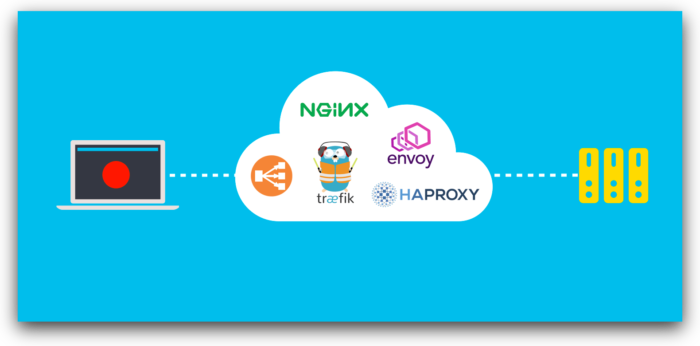
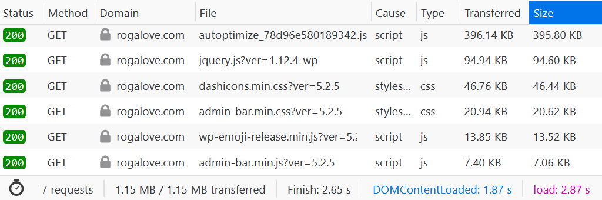
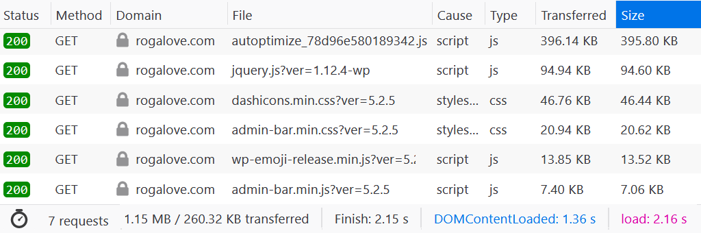
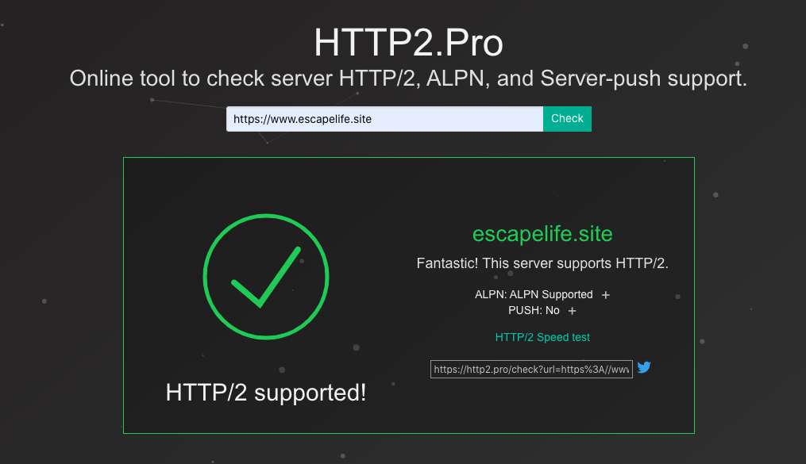

核心内容主要是通过修改 Nginx 配置文件来进行调优的！

海军上将威廉·麦克拉文在 2014 年于德克萨斯大学发表的著名演讲中说，如果你想改变世界，就从铺床开始吧！有时，一些很小的事情可能会产生很大的影响，无论你是早上起来整理你的床铺，还是对网站的 HTTP 服务配置文件做一些小小的改变。
这看起来像是不是有些夸大其词呢？但是，在 2020 年的前几个月里面，击垮了人们关于世界，什么是正常和合理的定义。由于 COVID‑19 的大流行，地球上将近一半的人被困在家中，互联网已成为他们交流、娱乐、购买食物、工作和教育的唯一方式。 每一周，互联网的网络流量和服务器负载都比以往任何时候都要高。根据 BroadbandNow 公司 3 月 25 日发布的报告显示，很多城市已经出现一定程度的网络退化。
这时，我们就需要通过优化网站，对 HTTP 服务器进行一些小的改动，可以减少用户使用的网络带宽和服务器上的负载，就可以给更多用户提供服务。这里，我们将介绍一些简单但功能强大的配置更改，这些改动操作步骤非常简单，但可以明显提高网站性能并减少使用的网络带宽。
举一个现实存在的例子，我们有一个电子商务的站点，该站点运行着 Nginx1.15.9 作为其 web 服务器。为了便于计算，我们假设该站点每天有 100 个独立用户，30%的用户是重复访问者，每个用户在一个会话中平均访问 4 个页面。
1. 启用 Gzip 压缩
Enabling Gzip Compression for HTML, CSS, and JavaScript Files
如您所知，在网站上构建页面的 HTML，CSS 和 JavaScript 文件可能非常庞大。在大多数情况下，Web 服务器可以即时压缩这些和其他文本文件，以节省网络带宽。查看 Web 服务器是否正在压缩文件的一种方法，就是使用浏览器中的开发人员工具。
对于许多浏览器，您可以使用 F12 键访问该工具，相关信息在 Network 选项卡上，可以得到如下所示的截图例子。正如您在左下角看到的，没有压缩:文本文件的大小为 1.15 MB，传输了大量数据。

默认情况下，压缩功能在 Nginx 中是禁用的，但因为安装方式或 Linux 发行版的不同，一些情况下可能在默认的 nginx .conf 配置文件中是启用状态。这里，我们在 NGINX 配置文件中启用了 gzip 压缩：
gzip on;
gzip_types application/xml application/json text/css text/javascript application/javascript;
gzip_vary on;
gzip_comp_level 6;
gzip_min_length 500;正如下面屏幕截图中看到的那样，压缩后数据传输减少到 260 KB，相对来收减少了约 80％数据传输！ 对于页面上的每个新用户，您可以节省大约 917 KB 的数据传输。对于长期使用我们网站的用户，每天可以节省 62 MB 带宽，每月可以节省 1860 MB 带宽。

2. 设置缓存头
Setting Cache Headers
浏览器检索网页文件时，会将副本保留在本地磁盘缓存中。这样，当你再次访问该页面时，浏览器就不必从服务器重新获取文件。每个浏览器都有自己的使用逻辑，来决定何时使用该文件对应的本地副本，以及何时在服务器更改了该文件时再次获取它。但是，作为网站所有者，你可以在发送的 HTTP 响应中设置缓存控制和过期标头，以提高浏览器的缓存行为的效率，从而减少很多不必要的 HTTP 请求。
首先，可以为字体和图像设置较长的缓存过期时间，这些字体和图像可能不会经常更改。在下面的示例中，设置客户端浏览器将字体和图像在本地缓存中保留一个月。
location ~* \.(?:jpg|jpeg|gif|png|ico|woff2)$ {
expires 1M;
add_header Cache-Control "public";
}3. 启用 HTTP2 协议
Enabling HTTP/2 Protocol Support
HTTP/2 是用于服务网页的下一代协议，旨在更好地利用网络和主机服务器。根据Google 文档，它可以更快地加载页面内容和处理请求。
The resulting protocol is more friendly to the network, because fewer TCP
connections are used in comparison to HTTP/1.x. This means less competition
with other flows, and longer‑lived connections, which in turn leads to better
utilization of available network capacity.在 Nginx1.9.5 及更高版本中已经支持了 HTTP/2 协议，如果需要使用或启用 HTTP/2 协议的话，在 Nginx 配置文件的 listen 指令上包含 http2 参数，即可。需要请注意的是，在大多数情况下，还需要启用 TLS 才能正常使用 HTTP/2 协议。
listen 443 ssl http2;下面这网站可以验证自己管理的网站是否支持 HTTP/2 的协议。

4. 优化日志
Optimizing Logging
我们在管理网站的时候，即使是有对应的监控服务，但是对应日志分析还是不够到位。你也可能只关注错误(400 和 500 个状态码等等)，而不是成功的请求。通过减少不必要的日志记录，可以节省服务器上的磁盘存储、CPU 和 I/O 操作。这不仅可以让我们服务器更快一些，而且释放的资源可以用来运行其他服务。
有几种不同的方法可以减少和优化日志记录，但是在这里，我们重点介绍三个。
- [1] 禁用页面资源请求的日志记录
如果我们不需要记录检索普通页面资源的请求，比如图像文件、JavaScript 文件和 CSS 文件等等，那么这是一个快速而简单的解决方案。你所需要做的就是创建一个与这些文件类型匹配的 location 块，并配置禁用其中的日志记录。
location ~* \.(?:jpg|jpeg|gif|png|ico|woff2|js|css)$ {
access_log off;
}- [2] 禁用成功请求的日志记录
这是一种更好的方法，因为它会丢弃带有 2xx 或 3xx 的响应查询，仅记录错误请求。它比方法 1 稍微复杂一点，因为它取决于您的 Nginx 日志记录的配置方式。
使用 Nginx 官方文档中的示例，让我们打开条件日志记录。创建一个 $loggable 的变量并将其设置为 0，用于带有 2xx 和 3xx 响应代码的日志请求，否则设置为 1，即可。然后在 access_log 指令中，将该变量作为条件引用。
# /etc/nginx/nginx.conf
access_log /var/log/nginx/access.log;# access_log directive
map $status $loggable {
~^[23] 0;
default 1;
}
access_log /var/log/nginx/access.log combined if=$loggable;- [3] 最小化 I/O 操作
即使你要记录所有请求，也可以通过打开访问日志缓冲来最大程度地减少 I/O 操作。使用此指令，NGINX 将等待将日志数据写入磁盘，直到填满 512 KB 缓冲区或自上次刷新以来已过了 1 分钟（以先发生者为准）。
access_log /var/log/nginx/access.log combined buffer=512k flush=1m;5. 限制带宽
Limiting Bandwidth for Particular URLs
如果服务器提供较大的文件(或较小但非常受欢迎的文件，例如表单或报表文件等)，则设置客户端下载文件的最大速度可能是一个非常有用的选择。如果你的站点已经承受了很高的网络负载，则限制下载速度会留下更多带宽，以使应用程序的关键部分保持响应，这是硬件制造商使用的非常受欢迎的解决方案。
使用 limit_rate 指令来限制特定 URL 的带宽。在这里，我们将/ download 下每个文件的传输速率限制为每秒 50 KB 的速度。
location /download/ {
limit_rate 50k;
}你可能还希望仅对较大的文件进行速率限制，这可以通过 limit_rate_after 指令进行。在此示例中，每个文件(来自任何目录)的前 500 KB 都不受速度限制地进行传输，之后的所有内容均以 50 KB/s 的速度为上限。这样可以加快网站关键部分的交付速度，同时降低其他部分的速度。
location / {
limit_rate_after 500k;
limit_rate 50k;
}请注意，速率限制适用于浏览器和 Nginx 之间的单个 HTTP 连接，因此请不要阻止用户使用下载管理器来绕开速率限制。
我们希望这五个技巧能帮助你优化网站的性能，然而速度和带宽增益因网站而异。即使调整你的服务 Nginx 配置，发现似乎并没有显着释放带宽或提高速度，但成千上万个网站分别调整其 Nginx 配置的整体影响加在一起呢？我们的全球网络得到更有效的利用，这意味着最关键的服务将在需要时提供。
哈哈哈，当然我们还可以使用 F5 等负载均衡器。